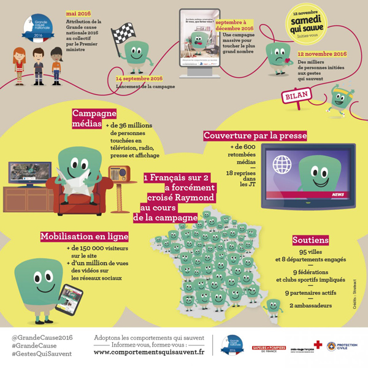
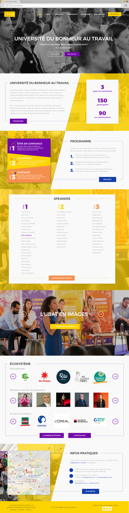

IRIS V. NAUDIN
Communication & Design
Services
Communication
Digital native et – presque – millenial, je suis de près les évolutions de la communication digitale. Je peux vous accompagner en :
- Stratégie digitale
- Gestion de communautés (RS)
- Stratégie & rédaction de contenus
- Corrections orthotypographiques
- Relations presse
Web
A force de rédiger des articles de sites et de blogs, j'ai fini par tomber dans le back-end. Je me suis auto-formée en :
- Webdesign
- CMS (ex. Wordpress)
- HTML/CSS
- Bootstrap
- Expérience utilisateur
Graphisme
Depuis mon passage par l'École Estienne, je suis passionnée de typographie et très à l'aise avec l'ensemble de la chaîne graphique :
- Charte graphique
- Identité visuelle
- Supports de communication (print et web)
- Recherche iconographique
Vous souhaitez en savoir plus ou me parler de votre projet ?
Qui suis-je ?
Freelance spécialisée en communication digitale, diplômée du MBA l'ISEE Business School, j'accompagne depuis plusieurs années les structures du solidaire (ONG, assos, entreprises sociales, agences) sur leur présence online.
Co-founder de Job for Change, membre du Collectif Ecedi Plus, typorigide et neo-geek, digital et innovation sociale, sont mon terrain de travail favori ! Centres d'intérêt : social business, communs collaboratifs, nouveaux modes de travail, web & réseaux.
J'écris aussi parfois sur Medium et fais de la photo, à mes heures perdues. Ah, et j'aime corriger des fautes, comme ça, pour rire.
Travaux & Projets
Exemples choisis parmi mes derniers projets en cours.
Contexte
EkoPDM est une plate-forme développée par Greenflex pour la société ekodev. Elle cherche à promouvoir et accompagner les plans de mobilité durable intra et inter-entreprises. Avec 50 plans de mobilité déjà réalisés en France, ekodev met aujourd'hui à disposition un outil simple, intuitif et complet pour répondre à la nouvelle législation en vigueur.
Mission(s)
Design & adaptation front-end (landing page) // Design & UX (plate-forme)
Contexte
La Grande cause nationale est un label du Gouvernement, attribué chaque année depuis 1977 à une association ou à un collectif d’associations par le premier ministre. Ce label permet de porter à la connaissance du grand public un sujet d’intérêt général et de le sensibiliser aux moyens d’agir. Trois acteurs majeurs de la prévention des risques et de l’action de secours se sont réunis pour faire des comportements qui sauvent la Grande cause nationale 2016 : la Fédération Nationale des Sapeurs-pompiers de France, la Croix-Rouge française et la Protection Civile. Être acteur de sa propre sécurité, c’est savoir anticiper et réagir, en connaissant les bons réflexes pour ne pas être démuni face à l’urgence, quelle que soit sa nature.
Mission(s)
Community management // veille // live-tweet #SamediquiSauve // gestion du budget publicitaire // reportings
Contexte
Propulsée par la Fabrique Spinoza, l'Université du Bonheur au Travail permet la rencontre d'acteurs du monde de l’entreprise – DRH, DRSE, managers, etc. – et de professionnels du bonheur au travail, tous engagés pour des organisations plus heureuses.
Mission(s)
Stratégie de communication //Design & intégration // Social Media Management // Formation
Leur avis
"Sans la contribution d'Iris, la présence de la Fabrique Spinoza sur le Web et les réseaux sociaux ne serait pas la même ! À travers son expérience et son professionnalisme, elle nous apporte une aide précieuse. Le site marque un tournant pour une structure associative comme la nôtre. Toujours disponible et réactive, Iris parvient à insuffler rigueur et efficacité sans se départir de son sourire. C'est une grande chance de pouvoir s'appuyer sur sa diplomatie et sa pédagogie !" Alexandre Jost, Fondateur de la Fabrique Spinoza
Le Planning Familial est une association d’éducation populaire qui œuvre pour les droits des femmes et lutte contre les discriminations et les violences sexistes.
Il développe de nombreux outils d'échange de pratiques, de mutualisation des informations, de formations aux bonnes pratiques envers les publics à sensibiliser.
Missions : stratégie de communication digitale – community management (instagram & facebook) – gestion du site web – photos – RP
Contexte
La Casemate, association loi 1901, est un centre de culture scientifique (CCSTI) fondé en 1979 à l’initiative de représentants des universités et centres de recherche locaux et des collectivités locales. Sa mission principale consiste à diffuser et promouvoir la culture scientifique, technique et industrielle auprès de tous les publics. Le CCSTI de Grenoble est la première structure du genre créée en France.
Mission(s)
Interviews des membres de l'écosystème // Rédaction du rapport d'activité 2016
Leur avis
"Ça a été un très grand plaisir de travailler avec Iris. Réactive et très professionnelle, elle est aussi très agréable dans sa façon de gérer les relations professionnelles, même quand elle doit s'emparer de sujets complexes en des temps record. Je recommande !" Elodie Weber, chargée de communication La Casemate
Contexte
L'association Simon de Cyrène se bat pour la fraternité avec les plus fragiles, en construisant des maisons partagées où vivent ensemble des adultes en situation de handicap et des jeunes en service civique. Dans ce but, elle a lancé une grande pétition soutenue par Philippe Pozzo Di Borgo et Omar Sy, suivie d'un appel à dons.
Missions
Social Media Management de la campagne : community management, formation, social ads.
Contexte
"Demandez à une comédienne de simuler une scène de demande en mariage, de rupture ou d’orgasme : elle le fera à merveille. Demandez-lui de simuler un infarctus, elle se plantera."
Dans une vidéo originale, plusieurs actrices se succèdent pour un casting dont elles ignorent la finalité. Après plusieurs brillantes performances, chacune botte en touche quand il s’agit de jouer l’infarctus.
Dans le cadre de la Semaine du Cœur 2016, la Fédération Française de Cardiologie a organisé #CastingDeFemmes, une opération de prévention nationale sur les maladies cardio-vasculaires chez la femme.
Mission(s)
Rédaction et mise en forme des emailings de sensibilisation et d'appel à don
4
Projets en cours
42
Idées par minute
1 548
Cafés
896
Corrections typo
Contact
41 rue du Faubourg Saint Martin
75010 Paris